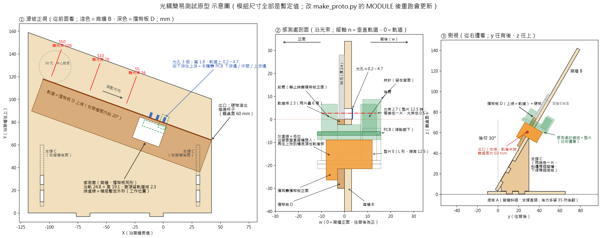

S1
這個原型要驗證什麼
方向的說法
站在滑坡正面（有放幣線的那一面）看，硬幣從左上往右下滾。右＝下游（出口）、前＝靠你這邊、後＝背牆後面。
要驗證的
- 槽型光耦能不能跨在「擋幣板 D＋背牆 B」兩片 3 mm 板上（疊起來 6 mm），裝得上、拆得下；光束從軌道上方約 2.5 mm 穿過。
- 滑坡的傾斜和正式機相同：後仰 30°，軌道在背牆上斜 20°。從 S5、S10、S50 三條放幣線放手，硬幣經過感測處的速度就和正式機三站相同。
- 在這個速度下：每一枚都數到、不多不漏（S5 是 5、10、50 元；S10 是 10、50 元；S50 是 50 元）；兩枚貼著滾分得出是兩枚；最薄的 5 元慢慢推過也會觸發。
- 硬幣不卡、不跳出軌道，也不擦到模組的前臂；窗上方只有 2.3 mm 的軌道條夠不夠強。
- 量出實品數字回填 v2：模組尺寸、最佳光束高度（用哪片墊片）、遮光時間、計數程式的建議值。
不在這裡驗證
分幣開口、硬幣會不會打到 PCB、正式的滑升式感測座和鎖塊、轉盤送幣與整機振動。這些在 v2 試切小樣測（03_v2_光耦版/laser_v2/out/trial_合板_1.svg）。
